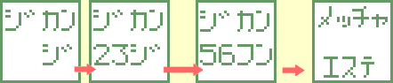
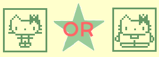
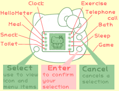
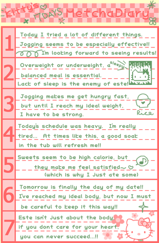

<HTML><BODY>
<CENTER>
<TABLE WIDTH=640 BACKGROUND="header.gif">
<TR><TD HEIGHT=82>&nbsp &nbsp<A HREF="index.html"></A></TD></TR></TABLE>
</BODY></HTML><HTML>
  <HEAD>
   <TITLE>Hello Kitty Metcha Este Translated!</TITLE>
  </HEAD>
  <BODY BACKGROUND="stars.gif" bgproperties="fixed">
    <CENTER>
    <TABLE WIDTH=640 BGCOLOr="#FFFFCC" BORDER=2px BORDERCOLOR="#669966">
   <TR>
    <TD><FONT FACE="comic sans ms"><HR>Thanks to Val of <A HREF="http://www.tinkerville.com">Tinkerville</A> for sending in these instructions! <BR><HR>
<FONT COLOR="#669966">
**Quick Note**  This virtual pet uses the term "este" (pronounced es-teh) which (I'm assuming) is taken from the English word "esthetics".<HR>
 <CENTER><FONT SIZE=5><BR><B>Before you start the game</B></FONT></CENTER><BR>
1. Remove the battery tab.<BR>
2. Press the reset button on the back of the unit.<BR>
   &nbsp;&nbsp;When to use the reset button:<BR>
    &nbsp;&nbsp;&nbsp; >When you want to start the game over again<BR>
   &nbsp;&nbsp;&nbsp;  (If you want to keep the time that's set on the clock screen, press the Enter button while on the END screen)<BR>
    &nbsp;&nbsp;&nbsp; >You want to reset the clock or the batteries have been changed<BR>
    &nbsp;&nbsp;&nbsp; >The screen display looks strange or the animations have stopped<BR>
3. Set the time<BR>
Example: Setting the time to 23:56<BR>
 <CENTER><TABLE WIDTH=442 BORDER=0>
  <TR>
   <TD COLSPAn=4><BR></TD></TR>
  <TR>
   <TD WIDTH=47%><FONT COLOR="#669966">First choose the correct hour using the Select button and set it using the Enter button</TD>
   <TD WIDTH=30%><FONT COLOR="#669966">Enter the correct minute by using the Select button and Enter button</TD>
   <TD><FONT COLOR="#669966">The "Metcha Este" opening will begin</TD>
  </TR>
</TABLE><BR>
<FONT SIZE=5><BR><B>Story</B></FONT></CENTER><BR>
One day, a boy who Kitty liked suddenly called her on the phone. "After 6 days, lets go on a date!"<BR>
"Oh my gosh, I've been asked out on a <FONT COLOR="#FF0000">DATE</FONT>!!"<BR>
"Hang on, he's asked me on this date, but I can't go with my body the way it is now..  Will I have to cancel?"<BR>
"Time limit is 7 days, make this a Happy Date!!<BR>
You are Kitty's esthetician<BR>
You have 7 days until the date.  Using different methods, try to help Kitty get to her best weight.<BR><BR>
<CENTER><FONT SIZE=5><BR><B>Screen and Unit Key</B></FONT><BR>
<TABLE WIDTH=600>
  <TR>
   <TD WIDTH=50%>
<FONT COLOR="#FF6666">Start from here:</FONT><BR>
<BR>
<FONT COLOR="#669966">Kitty's appearance and 'figure comment' will only change once each day.  Check for results over the course of the day by looking at the Hello Meter. (the lost and gained calories screens will start from 0 each day).</TD>
<TD>
</TD></TR>
</TABLE><BR>
<FONT SIZE=5><BR><B>Icons</B></FONT></CENTER><BR>
<BR> Shows the current time. Pressing the select button while on the clock icon will turn the sound on and off.<BR><BR><BR>
<BR>Let's you check on the following conditions: "Weight * figure comment * calorie intake * calorie dropped * Stress" <BR><BR><BR>
Here you can choose what to feed Kitty.  There are several things on the menu, but the calories of each item are not shown.<BR>

With the select button, choose what to feed Kitty.  When you don't want to feed something to her, enter 0, the next item on the menu will appear.<BR><BR>
<BR>Here you can give Kitty a snack.<BR><BR><BR>
<BR>Let Kitty go to the washroom.  (Kitty can't go by herself).<BR><BR><BR>
Here you can get Kitty to do exercises.  You can choose from Automatic or Manual.<BR>
Automatic: At a certain time, Kitty will go jogging by herself.<BR>
Manual: Kitty will only jog while you are pressing the Enter button.<BR><BR>
<BR>You can use this only of the day of Kitty's date (7 days from the start) to call Kitty's boyfriend.<BR><BR><BR>
<BR>This lets Kitty go in bath (Kitty can't go in bath by herself).  When you want her to get out, press the Enter button.<BR><BR><BR>
Here you can let Kitty go to sleep. (Kitty will not go to sleep on her own).  At a certain time, Kitty will wake up by herself, but it you want to wake her up before that, press the Enter button while on this icon.<BR><BR><BR>
You can play either Janken game or Fortune Telling (yours or friend's).  Select one.<BR>
Rock Paper Scissors Game<BR>
While on the RPS screen, use the Select button to choose Rock, Scissors or Paper and press the Enter button to play.<BR>
Fortune Telling<BR>
The first instance is your own Fortune.  Enter your own birthday (just the month and day).<BR>
<BR>
See this screen and -> use the Select button to choose your birth month and then press then Enter button -> Then use the select button to choose your birth day and press the Enter button. <BR>
**This month and day will remain entered until you reset the unit**<BR>
Your Fortune:<BR>
Enter the date that you want to learn the fortune for.  That day's fortune will be shown as diamond marks (the more marks, the better).<BR><BR>
Compatibility Fortune:<BR>
Enter the Birthday (month and day only) of the person who's compatibility you want to know.  Based on the zodiac, it will show you the compatibility between you and that person as a percentage (best is 100%).<BR><BR><BR>
<CENTER><FONT SIZE=5><BR><B>Esthetician Q & A</B></FONT><BR>
<TABLE WIDTH=635>
  <TR>
    <TD>
 <FONT COLOR="#669966">
Q1.  What is the best method of este?<BR>
A.   Good Question.  Here the basis of our Este is "set good rules = healthy lifestyle." Your best body will not be born of an unhealthy lifestlye.  Following a well balanced lifestyle is the first priority of an esthetician.<BR>
Q2.  Is it ok to call the boyfriend early on the day of the date?<BR>
A.   Yes, if Kitty is in her best condition, you can call him on the day of the date.  It is also ok to keep working on Kitty's figure until the last minute of the 7th day, but try your best not to get Time Over.<BR>
Q3.  How can I be a good estetician?<BR>
A.   Check the checkmeter often as it will tell you a lot of things.  Give her whatever care she needs.  The Metcha Diary offers good insight too, so be sure to read it!<BR><BR></TD>
<TD>
  </TD>
</TR>
</TABLE><BR></CENTER>
Requests from Kitty's dad<BR>

*When kitty gets nervous, please play some games with her.<BR>
*When she becomes sick, treat her (press the Enter button) and immediately afterwards give her rest.  Until she gets better, she will take a break from Este.<BR>
*Even if you are busy, please look after her once every day.  If you don't...well... things won't look good...
<BR><BR>

</TD></TR>
   </TR>
  </TABLE>
</BODY>
</HTML>
<HTML><BODY>
<CENTER>
<TABLE WIDTH=640 BACKGROUND="footer.gif">
<TR><TD HEIGHT=58><CENTER><A HREF="index.html"></A></TD></TR></TABLE>
</BODY></HTML>
